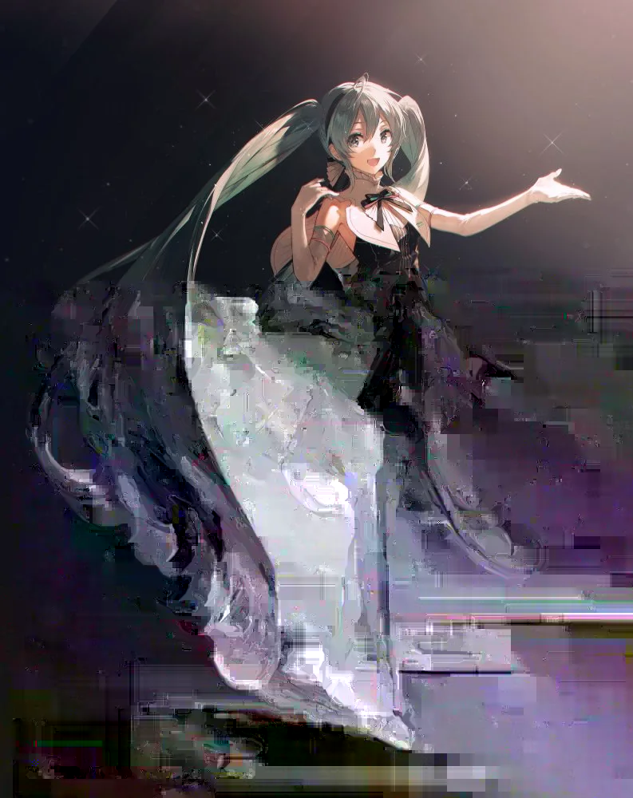

Glitch Art
Hastune Miku Glitch
My first glitch art uses a text editor to glitch an image of Hatsune Miku (original art by Rella).
I chose this glitch as my first piece because it highlights the strange line between the virtual world and real world: Hatsune Miku is an anthromorphization of a digital software, yet many people see her as a person and create songs where she seems human.
JoJo Glitch Art
JoJo's Bizarre Adventure by Hirohiko Araki is an iconic series well known for its bombastic storytelling and scenes as well as its bold artstyle. Its consists of several main storylines with different protagonists all nicknamed "JoJo" going head-to-head against varying villains. I chose to explore glitch art through JoJo because its crazy storytelling and artstyle felt like it fit.
Spoilers for JoJo's Bizarre Adventure: Battle Tendency and JoJo's Bizarre Adventure: Stardust Crusaders.
Tequila Joseph

Made by editing the original manga image in a text editor, this piece is a glitched image of Joseph Joestar, the main character of JoJo's Bizarre Adventure: Battle Tendency, attempting to sneak himself into a German Nazi camp by disguising himself as a well-endowed woman offering alcohol.
The glitch itself creates a clear separation between Joseph and the guards, with the latter framed in a pink filter as the object of Joseph's flirtations.
DIO vs Jotaro

Made by editing the original image's RAW file in Audacity (an audio editor), this piece is a glitched image of the standoff between DIO and Jotaro Kujo near the end of JoJo's Bizarre Adventure: Stardust Crusaders.
Both DIO and Jotaro have the ability to stop time for a couple of seconds. In the animated adaptation of the series, this is represented as a brief moment of static before the world becomes desaturated. The glitch here represents that ability.
ROAD ROLLER DA

Made by editing the original image's RAW file in audacity, this piece glitches an iconic scene in the fight between DIO and Jotaro: DIO stops time and disappears for an agonizing few seconds before returning with a road roller to crush his enemy!
I chose this glitch because it emphasizes the intensity of the moment and DIO's raw power, as the only colors left are DIO's yellows and greens as well as the blue from summoning his stand.